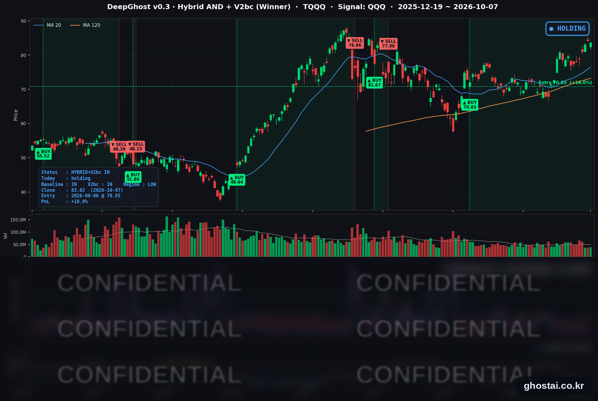

10Y 금리 불안/나스닥 숨고르기
· Ghost.AI 데일리 리포트
👻 매일 시그널과 히스토리를 홈페이지에서 한눈에 → www.ghostai.co.kr
회원 페이지 안내 — 회원 가입하시면 커버리지 전 종목의 원본 시그널과 분석 레포트를 매일 확인하실 수 있습니다. 회원 페이지는 블로그·유튜브보다 먼저 업데이트됩니다. 선착순 100명을 모집하고 있으며, 이메일과 필명만으로 가입하실 수 있고 서비스 사용료는 받지 않습니다. 가입 신청 후 운영자 승인을 거쳐 이용하실 수 있습니다.
미국 10년물 금리가 장중 5.365%, 30년물이 5.732%까지 올라 장중 기준 2002년 이후 가장 높았습니다. 오후 1시 10년물 입찰의 응찰률이 최근 평균보다 높게 나온 뒤 금리는 상승 폭을 대부분 되돌렸고, 10년물은 5.277%(+0.8bp)로 마감했습니다. 9월 FOMC 의사록에서는 위원 대부분이 연내 한 번 더 인상하는 것이 적절하다고 봤지만, 이미 알려진 내용이라 시장 반응은 크지 않았습니다. S&P 500은 0.22% 내리는 데 그쳤지만 구성종목 493개 중 136개만 올랐습니다. 대형 기술주가 상대적으로 강해 나스닥100(QQQ)은 0.25% 내렸고, TQQQ 전략은 44거래일째 보유를 유지했습니다(전략 수익률 +18.02%).
📊 오늘의 매매 신호
| 항목 | 내용 |
|---|---|
| 오늘 할 일 | ✅ 아무것도 안 해도 됩니다 |
| 포지션 상태 | 📈 TQQQ 보유 중 (IN POSITION) |
| 매수 진입일 | 2026-08-06 (44거래일째) |
| 진입가 → 현재가 | $70.85 → $83.62 |
| 현재 포지션 수익 | +18.02% |
TQQQ 시그널 — IN POSITION
현재 상태: 매수 포지션 유지 중 | 이번 포지션 수익 +18.02%

QQQ가 -0.25% 내리면서 TQQQ는 -0.75% 내린 83.62달러로 마감했습니다. 전략의 평가수익률은 전 거래일 +18.91%에서 +18.02%로 조금 낮아졌습니다. 오늘 새 신호는 없었고, 모델 기준으로 매도 신호까지의 여유는 전일보다 조금 늘었습니다. TQQQ 종가는 사상 최고 종가(6월 2일, 87.22달러)보다 4.13% 낮습니다.
8월 6일 진입 이후 10년물 금리는 4.670%에서 5.277%로 약 61bp 올랐고, 같은 기간 QQQ 종가도 714.65달러에서 757.73달러로 6.0% 올랐습니다. 오늘도 장중 금리는 크게 올랐지만 QQQ의 하루 낙폭은 0.25%였습니다. 진입 이후 S&P 500 구성종목 중 오른 종목이 30% 미만이었던 날은 오늘을 포함해 6번이었고, 그 6일 동안 QQQ 등락률은 -0.29% ~ +0.25% 범위였습니다.
오늘 미국 시장 — 시황 요약
지수 마감
| 지수 | 종가 | 등락률 | 사상 최고 종가 대비 |
|---|---|---|---|
| S&P 500 | 7,801.77 | -0.22% | -0.22% (10/6) |
| 나스닥 종합 | 27,538.69 | -0.22% | -0.22% (10/6) |
| 다우존스 | 51,179.87 | -0.66% | -5.83% (8/5) |
| 러셀 2000 (IWM) | 277.70 | -1.29% | -8.98% (8/14) |
| QQQ (나스닥100) | 757.73 | -0.25% | -0.25% (10/6) |
| TQQQ | 83.62 | -0.75% | -4.13% (6/2) |
전일 사상 최고 종가를 기록한 S&P 500·나스닥 종합·QQQ가 모두 0.2%대로 내렸고, 오늘 사상 최고 종가는 없었습니다. S&P 500은 정오 무렵 0.5% 넘게, 다우는 1% 가까이 내렸다가 10년물 입찰 이후 금리가 내려오면서 낙폭을 줄였습니다(보도 기준).
지수 하락 폭은 작았지만 S&P 500 구성종목 493개 중 136개(27.6%)만 올랐고, 종목 중간값은 -0.79%였습니다. 대형 기술주가 상대적으로 강해 나스닥100은 0.25% 내리는 데 그쳤고, 러셀 2000(IWM)은 1.29% 내려 9월 23일 이후 하루 하락 폭이 가장 컸습니다.
국채 금리 동향
| 만기 | 수익률 | 전 거래일 대비 |
|---|---|---|
| 3개월 | 4.037% | 0.0bp |
| 2년 (재무부 공시) | 4.77% | -2bp |
| 5년 | 5.021% | -0.7bp |
| 10년 | 5.277% | +0.8bp |
| 30년 | 5.661% | +2.0bp |
10년물은 장중 5.365%(2002년 4월 이후 최고), 30년물은 5.732%(2002년 5월 이후 최고)까지 올랐다가 상승 폭을 대부분 되돌렸습니다(장중 고점은 보도 기준). 영국 30년물 국채 금리도 장중 6.036%로 1998년 이후 가장 높아, 장기 국채 약세가 여러 나라에서 함께 나타났습니다. 오후 1시 10년물 입찰(390억 달러)은 낙찰 금리 5.300%, 응찰률 2.77배로 최근 10회 평균(2.52배)을 웃돌았고, 이후 금리가 내려왔습니다. 30년물 종가 5.661%는 10월 5일에 이어 2003년 이후 두 번째로 높은 종가입니다.
2년물은 내리고 30년물은 올랐습니다. 단기 금리 인상 기대보다 장기 물가·재정 부담이 장기 금리를 끌어올리는 모습입니다. 재무부 기준 2년물과 10년물의 차이는 48bp에서 51bp로, 10년물과 3개월물의 차이는 123.2bp에서 124.0bp로 넓어졌고 역전은 없습니다.
연준 발언 & 금리 패스
- 9월 FOMC 의사록 (10/7 오후 2시 공개): 9월 25bp 인상(3.75~4.00%)은 투표권자 12명 전원 찬성이었습니다. "대부분의 참석자"가 연말까지 한 번 더 인상하는 것이 적절할 가능성이 높다고 봤고, 물가 위험은 위쪽으로 기울어 있으며 고용 위험은 대체로 균형이라고 평가했습니다. 과거 관세 인상의 효과, 에너지·원자재 비용, AI 관련 투자 급증이 물가 압력 요인으로 거론됐습니다.
- 연준 위원 발언: 10월 7일에는 연준 위원 연설 일정이 없었습니다.
시장 해석은 매파적이지만 예상 범위 안입니다. 9월 점도표에 이미 연내 추가 인상이 나와 있었고, 의사록 공개 뒤에도 10월 인상 확률은 20% 안팎으로 보도돼 크게 바뀌지 않았습니다. 2년물 금리도 이날 2bp 내렸습니다. 다음 FOMC는 10월 27~28일이고, 10월 8일 월러(Waller) 이사 연설과 10월 14일 9월 CPI가 다음 판단 자료입니다.
오늘의 핵심 이슈
- 장기 금리, 장중 2002년 이후 최고 후 되돌림. 10년물·30년물 금리가 장중 2002년 이후 최고까지 올랐다가, 10년물 입찰 응찰률이 최근 평균보다 높게 나온 뒤 상승 폭을 대부분 되돌렸습니다. 정오 무렵 0.5% 넘게 내렸던 S&P 500도 0.22% 하락으로 마감했습니다.
- FOMC 의사록, 연내 추가 인상 쪽에 무게. 위원 대부분이 연말까지 한 번 더 인상하는 것이 적절하다고 봤지만, 9월 점도표로 이미 알려진 내용이라 10월 인상 확률은 20% 안팎에 머물렀습니다.
- 좁은 시장 폭, 금리 민감 업종 약세. 캐터필러가 5.75% 내리는 등 기계·중장비 19종목과 주택건설 5종목이 모두 내렸고, 전력 설비·데이터센터 시공(-2.86%)과 아날로그 반도체(-3.24%)도 크게 내렸습니다. 장비 구매에 대출을 쓰는 수요가 금리 상승에 직접 영향을 받는다는 분석이 나왔습니다. 반면 제약·바이오는 13종목 중 12종목이 올랐고, 빅테크 플랫폼(중간값 +0.81%)이 지수 하락 폭을 줄였습니다.
변동성 & 투자심리
VIX는 15.01에서 15.08로 0.47% 올랐습니다. 장기 금리가 장중 크게 올랐지만 VIX는 15대에 머물렀습니다. CNN 공포탐욕지수는 전 거래일 47.2(중립)에서 44.6으로 내려 "공포" 구간에 들어갔습니다(1주 전 30.3, 한 달 전 45.2). 7개 구성 지표 중 정크본드 수요는 극단적 탐욕이지만, 주가 강도와 시장 폭은 극단적 공포입니다. 지수 하락 폭은 작았지만 대부분의 종목이 내린 날이었다는 뜻입니다.
매크로 & 원자재
| 품목 | 종가 | 등락률 |
|---|---|---|
| WTI 원유 | $88.94 | -0.56% |
| 원유 ETF (USO) | $143.91 | -0.69% |
| 금 선물 | $4,136.70 | -1.20% |
| 금 ETF (GLD) | $375.88 | -1.67% |
- 유가: 멕시코만 열대성 저기압이 미국 원유 생산 지역에 영향을 줄 수 있다는 예보와 후티 반군의 사우디아라비아 공격 보도로 장 초반에는 올랐지만, 하락으로 마감했습니다. WTI 종가는 8월 31일 이후 가장 낮습니다.
- 금: 금 선물과 GLD 모두 내렸고, GLD는 8월 4일 이후 가장 낮은 종가입니다.
- 8월 소비자신용: 연율 1.9% 늘어 7월(3.6%)보다 증가 속도가 느려졌습니다.
주요 종목 동향
| 종목 | 종가 | 등락률 | 비고 |
|---|---|---|---|
| MU | 1,088.00 | +4.06% | 3거래일 연속 하락 뒤 반등 |
| NFLX | 69.70 | +1.47% | 3거래일 연속 상승 |
| AMZN | 259.92 | +1.42% | 2거래일 연속 상승 |
| AAPL | 336.67 | +0.91% | |
| GOOGL | 350.50 | +0.81% | |
| INTC | 113.12 | +0.55% | 4거래일 연속 하락 뒤 반등 |
| AVGO | 376.51 | +0.19% | |
| MSFT | 529.76 | +0.09% | |
| NVDA | 237.47 | -0.74% | 전일 사상 최고 종가 |
| TSLA | 377.81 | -0.75% | |
| QCOM | 177.12 | -2.16% | |
| META | 721.31 | -2.38% |
커버리지 12종목 중 8종목이 오르고 4종목이 내렸습니다. S&P 500 구성종목의 72%가 내린 날이었지만 대형 기술주는 상대적으로 강했습니다. 마이크론은 4.06% 올라 가장 많이 올랐습니다. 한국 시각 10월 8일 삼성전자 3분기 잠정 실적 발표를 앞둔 날이었고, 당일 고유 재료는 확인되지 않았습니다. 메타는 2.38% 내려 가장 많이 내렸고, 퀄컴은 아날로그 반도체가 약했던 날 2.16% 내렸습니다.
다음 일정 (미 동부시간)
- 10/8(목) 한국 시각 오전 삼성전자 3분기 잠정 실적 / 04:30 월러(Waller) 이사 연설 / 06:00 펩시코 실적 / 08:30 신규 실업수당 청구 / 13:00 30년물 국채 입찰 (220억 달러, 이번 주 3·10·30년물 입찰의 마지막 회차)
- 10/9(금) 10:00 미시간대 소비자심리 (예비)
- 이후 10/12(월) 콜럼버스 데이 — 채권 시장 휴장, 주식 시장 정상 개장 / 10/14(수) 9월 CPI·베이지북 / 10/15(목) 9월 PPI / 10/27~28 FOMC
Ghost.AI — Quantitative AI Investment
Model: DeepGhost v0.3 | Transformer-Based Deep Learning
Coverage: 13 tickers | Updated every trading day after US market close
⚠️ 본 자료는 정보 제공 목적으로만 작성되었으며 투자 권유가 아닙니다. 모든 투자의 책임은 투자자 본인에게 있습니다. 과거 성과가 미래 수익을 보장하지 않습니다.
[유의사항]
- 본 서비스는 불특정 다수를 대상으로 발행되는 단방향 정보 제공 서비스이며, 투자자 개인의 재산 상황·투자 목적·위험 선호도를 반영한 개별 투자 조언이 아닙니다.
- 고스트에이아이 주식회사는 고객과 쌍방향 의사소통(개별 상담, 맞춤형 자문 등)을 제공하지 않습니다.
- 본 콘텐츠는 투자 권유 또는 매매 주문의 청약·청약의 권유에 해당하지 않으며, 최종 투자 판단 및 그에 따른 손익의 책임은 전적으로 투자자 본인에게 있습니다.
고스트에이아이 주식회사